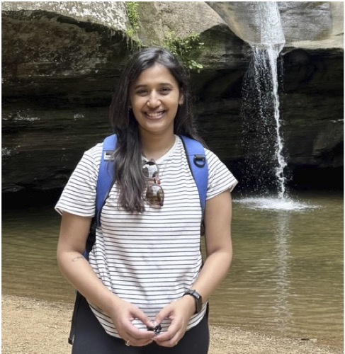

Student award ·
Congratulations on your CAS research scholarship, Carina!
Congratulations to Carina Mendeck on receiving the CAS Undergraduate Research Scholarship FY27 from Oklahoma State University’s College of Arts and Sciences!
We’re delighted to celebrate this recognition of her research. Well done, Carina!

Lab milestone ·
Congratulations on your master’s defense, Andrew!
Congratulations to Andrew Hughes on successfully defending his master’s thesis in Integrative Biology at Oklahoma State University!
Andrew studied morphological change in Oklahoma’s medium-sized mammals to evaluate the potential impacts of humans on wildlife. We’re delighted to celebrate this milestone and the hard work behind it. Well done, Andrew!

Publication ·
A massive collaborative effort, now in Evolution Letters
Our paper, “Invasion of new adaptive zones retains telltale signs of directional selection at macroevolutionary scales in mammals”, is now published in Evolution Letters!
Drawing on 11,793 specimens from 231 species and 43 museums worldwide, we asked whether major ecological transitions leave a lasting signature of directional selection in mammalian skull evolution. Most of the transitions we examined showed evolutionary rates above those expected from genetic drift, suggesting that signals of adaptation can persist across millions of years.
This paper represents a massive collective effort in specimen measurement, comparative analysis, and collaboration across institutions. A huge thank-you to our coauthors, museum curators, collection staff, and everyone who helped make it possible.

Lab welcome · Fall 2026
Welcome to the lab, Shradha!
We’re delighted to welcome Shradha Suman Yadav to the EMORPH2 Lab as a PhD student at the start of the Fall 2026 semester!
Shradha brings a background in environmental science, wildlife conservation, and comparative biomechanics. Her research interests center on evolutionary morphology, particularly how morphological traits evolve in response to ecological and functional pressures.
Welcome, Shradha! We’re excited to have you in the lab and look forward to the work ahead.
